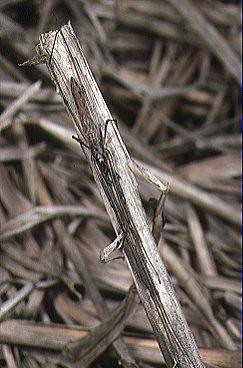

लंबे जबड़े की मकड़ीLong-jawed Orb-weaver
Tetragnatha mandibulata · Tetragnathidae · SPD-0011

- Scientific name
- Tetragnatha mandibulata Walckenaer, 1841
- Family
- Tetragnathidae
- Hindi
- लंबे जबड़े की मकड़ी
- Status here
- native
- IUCN
- not evaluated
When to look कब देखें
Expected mainly in March, April, May, June, July, August, September, October, November.
लंबे जबड़े की मकड़ी / Long-jawed Orb-weaver
Tetragnatha mandibulata Walckenaer, 1841 — Tetragnathidae
लंबे जबड़े की मकड़ी (लॉन्ग-जॉएड ऑर्ब-वीवर) — पूर्वी उत्तर प्रदेश के तालाबों के किनारों, सिंचित धान के खेतों (paddy fields) और जलमार्गों के पास पाई जाने वाली एक बहुत ही अनोखी और पतले शरीर वाली मकड़ी है। इसकी सबसे बड़ी विशेषता इसके अत्यधिक लंबे और मजबूत जबड़े (enormously elongated chelicerae) तथा आगे की ओर फैली हुई बहुत लंबी टाँगें हैं। जब यह मकड़ी किसी खतरे को भांपती है, तो यह अपने अगले पैरों को सीधे आगे की ओर और पिछले पैरों को पीछे की ओर फैलाकर एक पतली टहनी या घास के तिनके से चिपक जाती है, जिससे यह पूरी तरह से अदृश्य (becomes nearly invisible by mimicking a twig) हो जाती है। यह पानी की सतह के ठीक ऊपर एक सपाट, क्षैतिज जाला (horizontal orb web) बुनती है, जिसमें उड़ने वाले छोटे जलीय कीट फंस जाते हैं। यह मनुष्यों के लिए हानिरहित है और खेतों में कीट नियंत्रण में मदद करती है।
Quick Identification त्वरित पहचान
| Feature | Description |
|---|---|
| Body Shape | Elongated, narrow, cylindrical body; abdomen is straw-yellow or light green with faint silver lines |
| Legs | Exceptionally long, thin legs; front pairs are much longer than the body |
| Chelicerae | Enormously enlarged, projecting forward-facing jaws, especially long in males |
| Camouflage Pose | Stretches its body in a straight line along twigs or grass blades, mimicking a twig |
| Web Type | Large, loose, horizontal or slightly tilted circular orb web built close to the water surface |
Field tip: Inspect the reeds and tall grasses bordering village ponds or paddy fields in the evening. Look for spiders with very long legs resting on grass blades. If disturbed, they will freeze and pull their legs flat against the leaf, looking like a dry brown stick. The female is larger than the male and is shown in the field tip.
Morphology आकारिकी
Biometrics (typical measurements of adults in the northern Indian plains showing sexual size dimorphism):
| Measurement | Female | Male |
|---|---|---|
| Body length | 12–15 mm | 8–10 mm |
| Leg span | 40–55 mm | 35–45 mm |
| Chelicerae length | 3.5–4.5 mm | 3.0–4.0 mm |
| Average weight | 30–50 mg | 15–25 mg |
Adult Spider:
- Body Structure: The carapace is flat, yellowish-brown, with a dark central line. The abdomen is long, cylindrical, extending far past the spinnerets, and is pale straw-yellow or greenish-grey, marked with fine silvery-white or golden longitudinal lines on the upper side.
- Chelicerae (Jaws): Enormously developed, projecting forward from the front of the head. In males, they are nearly as long as the cephalothorax, carrying sharp teeth on the margins and curved fangs at the tips, which are used to grip females during mating.
- Legs: Long, thin, and spiny, with the first pair being up to 3 times the body length.
Behaviour & Ecology व्यवहार और पारिस्थितिकी
- Twig Mimicry: To avoid predators during the day, it uses a unique behavior called "twig mimicry." It presses its elongated body against a leaf vein or dry stem, stretching its two front pairs of legs straight forward and the rear pairs straight backward, making it look like a part of the plant.
- Horizontal Web: Unlike typical vertical spider webs, Tetragnatha mandibulata builds a nearly horizontal orb web over water. The web has a large open hub in the center. Flying insects that rise from the water (like midges and mosquitoes) fly upward and get caught in the horizontal sticky threads.
- Water Walking: They have hydrophobic hairs on their tarsi (feet), allowing them to walk or run across the water surface tension to escape predators or capture prey that falls into the water.
Life Cycle / Phenology जीवन चक्र
- Reproduction: Breeds mainly during the warm monsoon season (July to September).
- Mating: The male uses his elongated jaws and specialized teeth to lock the female's fangs in place, preventing her from attacking and consuming him during mating.
- Egg sac: The female spins a loose, greyish-white silk cocoon containing 80–150 eggs and attaches it to the underside of a leaf near the pond margin. Eggs hatch in 12–15 days, and the tiny spiderlings disperse using silk threads (ballooning).
Host Plants or Prey आहार
Primary insect prey:
- Aquatic insects: Mosquitoes, midges, mayflies, and small damselflies.
- Paddy pests: Rice leaf folders, plant hoppers, and small moths like the adult Yellow Stem Borer (Scirpophaga incertulas).
Predators / Natural Enemies शत्रु
- Birds: Insectivorous waders like the Common Sandpiper (Actitis hypoleucos, BRD-0063, already in atlas), herons, and wagtails hunt them along pond banks.
- Amphibians: Skipper Frogs (Euphlyctis cyanophlyctis) capture them from the water margins.
- Wasps: Mud-dauber wasps capture and paralyze these spiders to stock their mud nests for their larvae.
Agricultural / Human Relevance कृषि प्रासंगिकता
Natural biological control agent. Long-jawed spiders are highly valued in paddy cultivation in eastern UP. By building horizontal webs close to the water level in flooded rice fields, they capture large numbers of leafhoppers, plant hoppers, and stem borer moths. This naturally reduces pest populations and helps farmers limit chemical pesticide spraying.
Venom safety: They possess venom to paralyze insects, but they are not aggressive to humans. Their bite is minor, causing only temporary redness, and they cannot pierce human skin easily.
Expected Locally स्थानीय रूप से अपेक्षित
Not a field record. Written from published accounts for eastern Uttar Pradesh. No confirmed local sighting yet — if you have seen it, that is what the atlas needs.
अभी तक स्थानीय पुष्टि नहीं। यह विवरण प्रकाशित स्रोतों से है, किसी अवलोकन से नहीं।
A common resident throughout the Basti district, especially along the margins of oxbow lakes, village ponds (talab), and flooded paddy fields in the Harraiya and Vikramjot blocks. During the post-monsoon weeks (September to October), their loose horizontal webs can be seen in large numbers across irrigation canals.
Distribution वितरण
Global range: Widespread across South Asia, Southeast Asia, East Asia, and northern Australia.
In India: Widespread in all wet agricultural plains and river basins.
In Uttar Pradesh: Abundant in all districts, particularly in rice-growing zones.
In Basti district / eastern UP: Common across all blocks near permanent or seasonal wetlands.
Research Questions शोध प्रश्न
Anyone can investigate these | कोई भी इन प्रश्नों की जाँच कर सकता है
- How many mosquitoes get caught in a single horizontal web of a long-jawed spider in one night? — Count prey remnants in webs at dawn.
- Does the long-jawed spider prefer building its web on grasses over woody twigs? / क्या लंबे जबड़े की मकड़ी लकड़ी की टहनियों की तुलना में घास पर जाला बनाना अधिक पसंद करती है? — Record web anchor sites.
- What is the average height of the horizontal web above the water surface in a local Basti pond? — Measure web heights.
- How long does a long-jawed spider remain in its twig mimicry pose when disturbed by a human observer? — Track freeze times.
- Does the density of long-jawed spiders drop in paddy fields treated with chemical granules compared to organic fields? / क्या रासायनिक कीटनाशकों वाले धान के खेतों में जैविक खेतों की तुलना में लंबे जबड़े की मकड़ी की संख्या कम होती है? — Count spider populations in different plots.
Similar Species मिलती-जुलती प्रजातियाँ
| Species | How to tell apart | comparison |
|---|---|---|
| Giant Wood Spider (Nephila pilipes) | Much larger (body 30–50 mm); builds massive, vertical golden-silk webs in forests; yellow-black pattern | विशालकाय जंगली मकड़ी — बहुत बड़ा आकार, पीला-काला रंग |
| Silver Orb-weaver (Leucauge decorata) | Abdomen is silvery-white with bright green and yellow patterns, shaped like an oval; builds vertical webs | चांदी जैसी मकड़ी — चांदी जैसा चमकीला गोल पेट |
| Green Lynx Spider (Peucetia viridana) | Bright green body with long, spiny legs; does not build a web, hunts by stalking on leaves | हरा लिंक्स स्पाइडर — जाला नहीं बनाती, हरी टाँगें |
Field rule: Slender, straw-yellow spider with very long legs and forward-projecting jaws, resting in a stick-like pose on reeds or building horizontal webs over water, is the Long-jawed Orb-weaver.
Taxonomy & Classification वर्गीकरण
Original description. Charles Athanase Walckenaer described the Long-jawed Orb-weaver as Tetragnatha mandibulata in 1841 in his Histoire Naturelle des Insectes. Aptères (Vol. 2, p. 211). The type locality was listed as Asia. The genus name Tetragnatha is derived from the Greek tetra (four) and gnathos (jaw), referencing the appearance of the large chelicerae. The specific name mandibulata refers to the prominent mandibles/chelicerae.
Subspecies. Monotypic — no subspecies are currently recognised.
Family and order placement. Placed in the order Araneae, infraorder Araneomorphae, family Tetragnathidae (long-jawed orb-weavers), subfamily Tetragnathinae.
Phylogenetic notes. The genus Tetragnatha is highly specialized for wetland habitats, showing convergent evolution with other water-surface active arachnids in leg structures and hunting strategies.
IUCN status rationale. Not evaluated (NE) by the IUCN Red List. It has a secure and stable population.
Photo Gallery फोटो गैलरी
References संदर्भ
- Walckenaer, C. A. (1841). Histoire Naturelle des Insectes. Aptères. Roret, Paris, Vol. 2, p. 211. [original description]
- Tikader, B. K. (1982). Fauna of India: Spiders: Araneae. Vol. II. Zoological Survey of India, Calcutta.
- Sebastian, P. A. & Peter, K. V. (2009). Spiders of India. Universities Press, Hyderabad.
- Barrion, A. T. & Litsinger, J. A. (1995). Riceland Spiders of South and Southeast Asia. CAB International, Wallingford.
- World Spider Catalog (2024). Tetragnatha mandibulata species page.
- GBIF Occurrence Data — Tetragnatha mandibulata, India (2010–2025).
Source file: species/fauna/spiders/long_jawed_spider.md